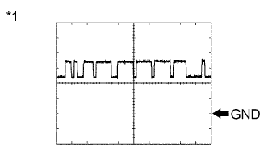
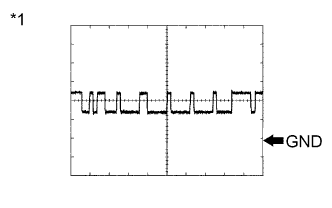

TRANSFER SYSTEM > TERMINALS OF ECU |
| CHECK FOUR WHEEL DRIVE CONTROL ECU |
Measure the voltage and resistance according to the value(s) in the table below.
| Terminal No. (Symbol) | Wiring Color | Terminal Description | Condition | Specified Condition |
| G41-1 (HL1) - G42-4 (GND) | GR - W-B | High-low transfer shift actuator limit switch | Engine switch on (IG) Transfer position switch H4 | 10.5 to 14 V |
| Engine switch on (IG) Transfer position switch L4 | Below 1.5 V | |||
| G41-2 (HL2) - G42-4 (GND) | LG - W-B | High-low transfer shift actuator limit switch | Engine switch on (IG) Transfer position switch H4 | Below 1.5 V |
| Engine switch on (IG) Transfer position switch L4 | 10.5 to 14 V | |||
| G41-7 (TL2) - G42-4 (GND) | V - W-B | Multi mode transfer shift actuator limit switch | Engine switch on (IG) Center differential lock switch Lock | Below 1.5 V |
| Engine switch on (IG) Center differential lock switch Free | 10.5 to 14 V | |||
| G41-8 (TL3) - G42-4 (GND) | G - W-B | Multi mode transfer shift actuator limit switch | Engine switch on (IG) Center differential lock switch Lock | 10.5 to 14 V |
| Engine switch on (IG) Center differential lock switch Free | Below 1.5 V | |||
| G41-13 (LO) - G42-4 (GND) | GR - W-B | Transfer position switch | Engine switch on (IG) Transfer position switch H4 | 10.5 to 14 V |
| Engine switch on (IG) Transfer position switch L4 | Below 1.5 V | |||
| G41-14 (P1) - G42-4 (GND) | W - W-B | Multi mode transfer shift actuator Center differential lock position detection switch | Engine switch on (IG) Center differential lock switch Free | 9.5 to 14 V |
| Engine switch on (IG) Center differential lock switch Lock | Below 1.5 V | |||
| G41-16 (DL) - G42-4 (GND) | W - W-B | Center differential lock switch | Engine switch on (IG) Center differential lock switch ON | Below 1.5 V |
| Engine switch on (IG) Center differential lock switch OFF | 9.5 to 14 V | |||
| G41-19 (CANH) - G42-4 (GND) | G - W-B | CAN communication line | Engine switch on (IG) | Pulse generation (See waveform 1) |
| G41-20 (CANL) - G42-4 (GND) | W - W-B | CAN communication line | Engine switch on (IG) | Pulse generation (See waveform 2) |
| G41-21 (L4) - G42-4 (GND) | R - W-B | Transfer L4 signal | Engine switch on (IG) Transfer position switch H4 | 10 to 14 V |
| Engine switch on (IG) Transfer position switch L4 | Below 1.5 V | |||
| G42-2 (HM1) - G42-4 (GND) | B - W-B | High-low transfer shift actuator motor | Engine switch on (IG) Transfer position switch H4 → L4 (During operation of high-low transfer shift actuator motor from HIGH to LOW) | 10 to 14 V |
| Engine switch on (IG) Transfer position switch H4 → L4 (High-low transfer shift actuator motor stopped) | Below 1.5 V | |||
| G42-3 (IG) - G42-4 (GND) | R - W-B | IG power | Engine switch on (IG) | 11 to 14 V |
| G42-4 (GND) - Body ground | W-B - Body ground | Ground | Always | Below 1 Ω |
| G42-6 (HM2) - G42-4 (GND) | W - W-B | High-low transfer shift actuator motor | Engine switch on (IG) Transfer position switch L4 → H4 (During operation of high-low transfer shift actuator motor from LOW to HIGH) | 10 to 14 V |
| Engine switch on (IG) Transfer position switch L4 → H4 (High-low transfer shift actuator motor stopped) | Below 1.5 V | |||
| G42-7 (TM2) - G42-4 (GND) | V - W-B | Multi mode transfer shift actuator motor | Engine switch on (IG) Center differential lock switch LOCK → FREE (During operation of multi mode transfer shift actuator motor from LOCK to FREE) | 10 to 14 V |
| Engine switch on (IG) Center differential lock switch LOCK → FREE (Multi mode transfer shift actuator motor stopped) | Below 1.5 V | |||
| G42-8 (TM1) - G42-4 (GND) | P - W-B | Multi mode transfer shift actuator motor | Engine switch on (IG) Center differential lock switch FREE → LOCK (During operation of multi mode transfer shift actuator motor from FREE to LOCK) | 10 to 14 V |
| Engine switch on (IG) Center differential lock switch FREE → LOCK (Multi mode transfer shift actuator motor stopped) | Below 1.5 V |
|  |
Using an oscilloscope, check waveform 1.
| Item | Content |
| Terminal No. (Symbol) | G41-19 (CANH) - G42-4 (GND) |
| Tool setting | 1 V/DIV., 10 μsec./DIV. |
| Condition | Engine stopped and engine switch on (IG) |
| *1 | Waveform 1 |
|  |
Using an oscilloscope, check waveform 2.
| Item | Content |
| Terminal No. (Symbol) | G41-20 (CANL) - G42-4 (GND) |
| Tool setting | 1 V/DIV., 10 μsec./DIV. |
| Condition | Engine stopped and engine switch on (IG) |
| *1 | Waveform 2 |